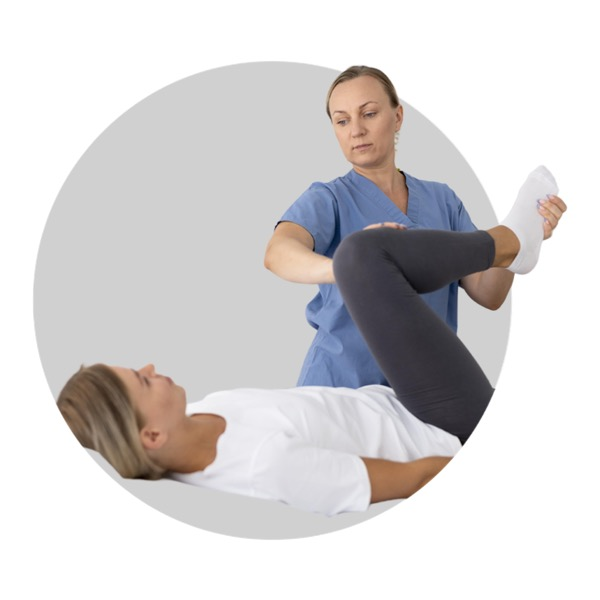
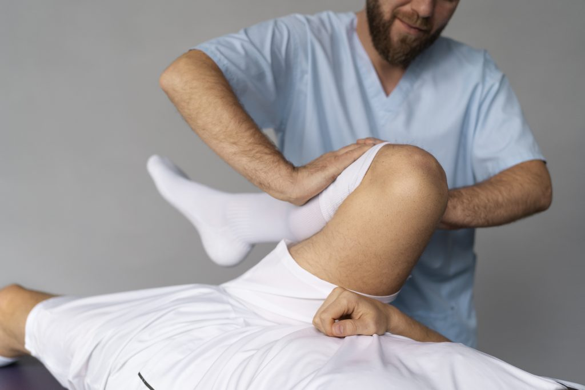
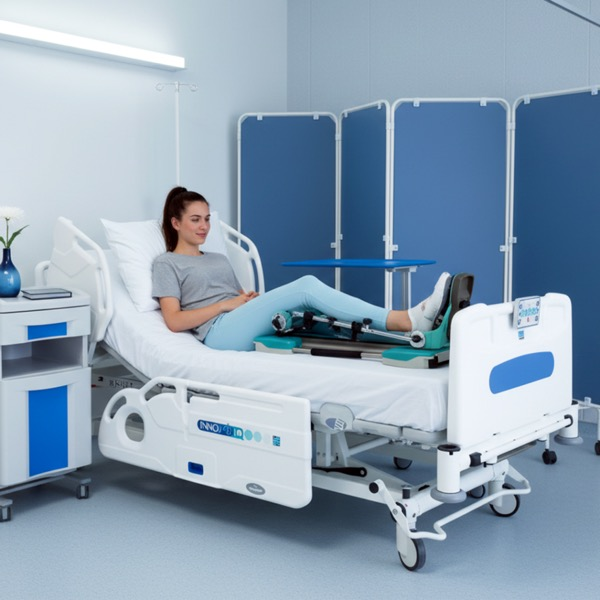
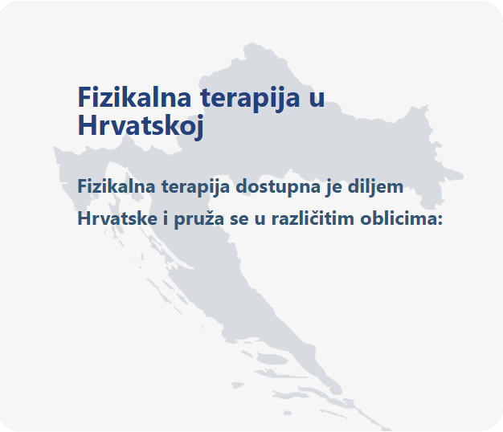

Fizikalna terapija – terapija pasivnim razgibavanjem
Fizikalna terapija obuhvaća širok spektar metoda i postupaka koji se koriste za oporavak nakon ozljeda, operacija ili kroničnih bolesti. Jedan od najučinkovitijih pristupa u ranoj fazi rehabilitacije je terapija pasivnim razgibavanjem, poznata kao CPM (Continuous Passive Motion) metoda. Ova metoda omogućuje kontinuirano i kontrolirano pokretanje zgloba bez aktivnog napora pacijenta, čime se ubrzava oporavak i smanjuje rizik od komplikacija.


Što je fizikalna terapija?
Fizikalna terapija je grana medicine koja koristi fizikalne metode za liječenje i rehabilitaciju pacijenata. Glavni ciljevi fizikalne terapije uključuju vraćanje pokretljivosti zglobova i mišića, jačanje mišića oslabljenih nakon ozljede ili operacije, smanjenje boli i upale, poboljšanje cirkulacije i limfnog sustava te prevenciju komplikacija poput ukočenosti zglobova i tromboze.
Fizikalna terapija primjenjuje se u ortopediji, neurologiji, kardiologiji, sportskoj medicini i gerijatrijskoj rehabilitaciji. Ovisno o dijagnozi i potrebama pacijenta, fizioterapeut sastavlja individualni program terapije koji može uključivati različite metode i aparate.
Terapija pasivnim razgibavanjem (CPM metoda)
Terapija pasivnim razgibavanjem, poznatija kao CPM (Continuous Passive Motion) metoda, temelji se na kontinuiranom, automatskom pokretanju zgloba kroz kontrolirani raspon pokreta. Aparat pokreće zglob umjesto pacijenta, što je posebno važno u ranoj postoperativnoj fazi kada pacijent nije u stanju samostalno izvoditi pokrete.
CPM terapija se najčešće primjenjuje nakon operacija koljena (ugradnja umjetnog koljena, rekonstrukcija prednjeg križnog ligamenta, operacija meniskusa), operacija kuka (ugradnja umjetnog kuka) te operacija lakta. Istraživanja su pokazala da rana primjena CPM terapije značajno poboljšava ishod rehabilitacije.
Prevencija ukočenosti zglobova
Nakon operacije, zglob ima tendenciju stvaranja priraslica i ožiljnog tkiva koje ograničava pokretljivost. CPM terapija kontinuiranim pokretanjem zgloba sprječava stvaranje priraslica i održava elastičnost tkiva, čime se značajno smanjuje rizik od ukočenosti zgloba.
Poboljšanje cirkulacije i smanjenje rizika od tromboze
Kontinuirano pokretanje zgloba potiče protok krvi i limfe u operiranom području. Bolja cirkulacija ubrzava proces cijeljenja, smanjuje oticanje i značajno snižava rizik od duboke venske tromboze, koja je česta komplikacija nakon ortopedskih operacija.
Smanjenje boli i oticanja
CPM terapija pomaže u smanjenju postoperativne boli i oticanja stimulacijom cirkulacije i limfne drenaže. Kontrolirano pokretanje zgloba također potiče lučenje sinovijalne tekućine koja podmazuje zglob i smanjuje trenje, što dodatno pridonosi smanjenju boli.
Pacijenti koji koriste CPM terapiju u ranoj fazi oporavka često bilježe brži povratak svakodnevnim aktivnostima. Redovito pasivno razgibavanje omogućuje postupno povećanje raspona pokreta, što olakšava prijelaz na aktivne vježbe i samostalno kretanje.
Kinetek aparat – vodeći uređaj za CPM terapiju
Kinetek aparat jedan je od najnaprednijih uređaja za CPM terapiju na tržištu. Dizajniran je za jednostavnu upotrebu u kućnim uvjetima, čime pacijentima omogućuje provođenje terapije bez potrebe za svakodnevnim odlascima u polikliniku.
Glavne prednosti Kinetek aparata uključuju:
Precizna individualna prilagodba – raspon pokreta, brzina i trajanje terapije mogu se fino podesiti prema potrebama svakog pacijenta i uputama liječnika.
Sigurnost pacijenta – ugrađeni sigurnosni sustavi sprječavaju prekomjerno opterećenje zgloba i automatski zaustavljaju uređaj u slučaju otpora ili boli.
Udobnost i ergonomija – anatomski oblikovan nosač za nogu ili ruku osigurava pravilnu poziciju ekstremiteta tijekom terapije, čime se maksimizira učinkovitost i udobnost.
Fleksibilna primjena – aparat se može koristiti za rehabilitaciju koljena, kuka i lakta, čime pokriva najčešće ortopedske operacije.

Ostale metode u fizikalnoj terapiji
TENS i EMS uređaji
TENS (transkutana električna nervna stimulacija) koristi niskofrekventne električne impulse za ublažavanje boli blokiranjem bolnih signala prema mozgu. EMS (električna mišićna stimulacija) potiče kontrakciju mišića električnim impulsima, čime se sprječava atrofija mišića nakon operacije ili dugotrajne imobilizacije.
Ultrazvučna terapija
Ultrazvučna terapija koristi zvučne valove visoke frekvencije za zagrijavanje dubokih tkiva, poboljšanje cirkulacije i ubrzavanje procesa cijeljenja. Posebno je učinkovita kod liječenja upala tetiva, burzitisa i drugih mekotkivnih ozljeda.
Magnetoterapija
Magnetoterapija koristi pulsirajuća magnetska polja za stimulaciju staničnog metabolizma i ubrzavanje regeneracije tkiva. Primjenjuje se kod prijeloma kostiju, osteoporoze, artritisa i kroničnih bolova u zglobovima i mišićima.
Krioterapija
Krioterapija je primjena hladnoće u terapijske svrhe. Smanjuje upalu, oticanje i bol sužavanjem krvnih žila i usporavanjem metaboličkih procesa u ozlijeđenom području. Koristi se u akutnoj fazi ozljede i nakon operativnih zahvata.
Termoterapija
Termoterapija koristi toplinu za opuštanje mišića, poboljšanje cirkulacije i smanjenje boli. Primjenjuje se kod kroničnih bolova, mišićnih spazama i degenerativnih bolesti zglobova. Metode uključuju tople obloge, parafinske kupke i infracrveno zračenje.

Fizikalna terapija Zagreb
Zagreb kao najveći grad u Hrvatskoj nudi široku mrežu poliklinika i ustanova za fizikalnu terapiju. No, sve više pacijenata odlučuje se za kućnu rehabilitaciju s Kinetek aparatom jer im omogućuje provođenje terapije u udobnosti vlastitog doma, bez čekanja i putovanja. Dostavljamo Kinetek aparat na adresu u Zagrebu i široj okolici.
Fizikalna terapija Split
Pacijenti u Splitu i okolici mogu koristiti uslugu najma Kinetek aparata za kućnu rehabilitaciju. Dostava aparata vrši se na kućnu adresu, a naš tim pruža edukaciju o pravilnom korištenju. CPM terapija u kućnim uvjetima idealna je za pacijente nakon ortopedskih operacija koji žele brži i ugodniji oporavak.
Fizikalna terapija Rijeka
U Rijeci i Primorsko-goranskoj županiji pacijenti mogu iznajmiti Kinetek aparat za rehabilitaciju kod kuće. Profesionalna dostava i edukacija osiguravaju pravilno provođenje terapije, a fleksibilnost kućne rehabilitacije omogućuje provođenje višestrukih sesija dnevno prema preporuci liječnika.
Fizikalna terapija u kući
Fizikalna terapija u kući postaje sve popularniji izbor za pacijente nakon operacija koljena, kuka ili lakta. Kinetek aparat za pasivno razgibavanje omogućuje profesionalnu rehabilitaciju bez potrebe za odlascima u polikliniku. Prednosti uključuju udobnost vlastitog doma, fleksibilan raspored terapije, mogućnost provođenja više sesija dnevno i izbjegavanje stresa povezanog s prijevozom, posebno u ranoj fazi oporavka.
CPM terapija s Kinetek aparatom predstavlja moderan i učinkovit pristup rehabilitaciji koji je dostupan svima, bez obzira na lokaciju. Kombinacijom profesionalne opreme i kućne udobnosti, pacijenti postižu optimalne rezultate u kraćem vremenskom roku.
Za više informacija o najmu Kinetek aparata ili za savjet o rehabilitaciji, kontaktirajte nas. Naš stručni tim stoji vam na raspolaganju za sva pitanja.